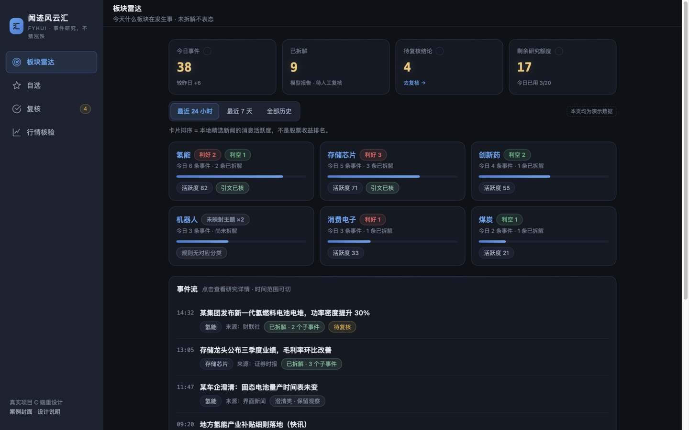
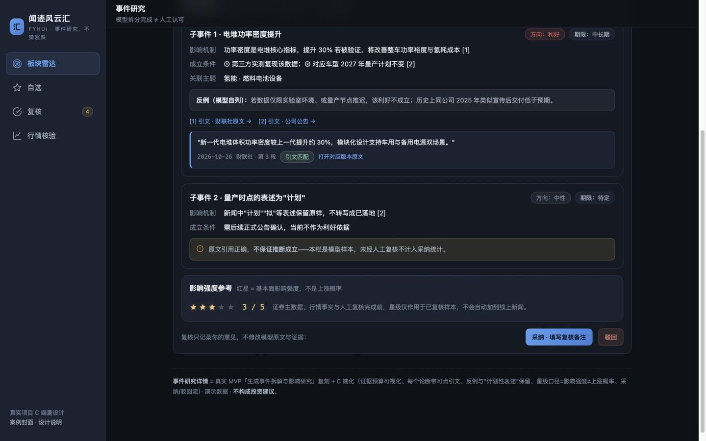

真实项目 · 独立迭代 v0.1 → v0.7AI 研究工具C 端重设计
闻迹风云汇 — 板块事件研究系统
一条完整闭环：采集 → 本地向量知识库 → 模型事件拆解 → 引文核验 → 人工采纳/驳回复核 → 行情事实层。它不猜涨跌——"模型拆分完成 ≠ 人工认可""星级 = 基本面影响强度，不是上涨概率"是写进产品的纪律。C 端重设计把这些纪律翻译成个人投资者看得懂的界面。
01系统里真实存在的东西
这不是画出来的产品——下面每一行都对应可以演示的运行机制（演示环境随时可跑）：
| 模块 | 真实实现 | 设计上的取舍 |
|---|---|---|
| 知识库 | SQLite + BGE 512 维向量，版本快照 / 幂等 / 备份恢复 | 原文永不因"不重要"被丢弃；索引失败保留旧版本 |
| 事件拆解 | MiMo 生成子事件：方向 / 期限 / 机制 / 成立条件 / 反例 | 证据 ≤6 篇、正文 ≤2 万字符、日 20 次额度——成本口径可见 |
| 引文核验 | 每个论断可展开原文引文，错引校验失败不发布 | 原文引用正确，也不保证推断成立——页面明示 |
| 人工复核 | 采纳 / 驳回 + 复核备注；驳回报告退出统计但可追溯 | 复核只记录意见，不修改模型原文与证据 |
| 行情事实层 | 五种核验状态；未配置供应商即 configured=false | 不用模拟数据冒充行情；矛盾并列展示不裁决 |
02C 端重设计：把"凭什么信"翻译成界面
工作台是给研究员的；个人投资者打开同一套系统时，第一问是"这个 AI 结论我能信吗"。重设计的每一屏都在回答它：


| 真实机制 | 界面语言 |
|---|---|
| 引文展开 + 版本原文 | 每个论断带可点引文卡（来源 / 时间 / 定位） |
| 错引不发布、不自动付费重试 | 复核中心的"校验失败"拦截卡——失败可见但不惊吓 |
| 正负线索不抵消；未映射主题不荐股 | 自选页口径条 + 空态卡直接写明纪律 |
| 行情未配置不伪造 | 诚实空态：configured=false + "不用模拟数据冒充行情" |
03为什么不做涨跌预测
因为没有行情回测与复权数据支撑，预测不可验证；不可验证的输出对投资者是负资产。路线图的顺序本身就是设计决策：人工复核与标注 → 跨来源事件聚类 → 证券主数据 → 授权行情验证——而不是直接让模型猜涨跌。